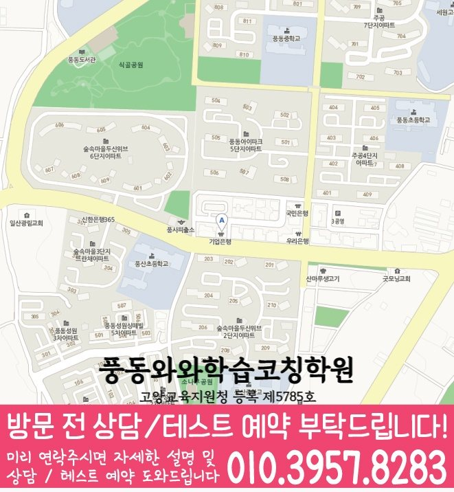

읽기·어휘 진단
파닉스, 어휘량, 독해 중 지금 어디가 부족한지 먼저 나누어 확인합니다.
ELEMENTARY ENGLISH COACHING
경기 고양시 식사동 초등학생을 위한 초등영어학원 안내입니다. 파닉스·어휘·독해 진단, 듣기·말하기 연습, 학습 습관 관리 기준을 상담 전에 확인할 수 있습니다.


와와학습코칭센터 풍동점 기준으로 식사동 학생의 상담 범위를 확인합니다. 실제 방문·상담 전에는 주소와 이동 동선을 함께 확인해 주세요.
핵심 요약
식사동 학생에게 필요한 영어 관리는 단어량을 늘리는 것보다 지금 읽기와 듣기 중 어디가 부족한지 먼저 확인하는 것입니다.
파닉스, 어휘량, 독해 중 지금 어디가 부족한지 먼저 나누어 확인합니다.
발음과 억양을 듣고 따라 하는 연습을 반복해 자신감을 키웁니다.
짧은 학습량으로 시작해 꾸준히 이어가는 습관을 만듭니다.
학원 선택 가이드
아이마다 영어를 처음 접한 시기와 좋아하는 콘텐츠가 다릅니다. 이런 관심사를 학습에 연결하면 흥미를 오래 유지할 수 있습니다.
와와학습코칭센터 풍동점은 경기 고양시 식사동 학생을 기준으로 상담을 진행하며, 풍산초, 다솜초, 은행초 학생들이 주로 문의합니다. 실제 등록 전에는 경기 고양시 일산동구 숲속마을로 44 미래타워 6을 기준으로 이동 동선과 상담 가능 시간을 확인하는 것이 좋습니다.
영어 학습은 한 번에 완성되지 않습니다. 듣기, 말하기, 읽기, 쓰기를 골고루 오가며 조금씩 쌓아가는 과정이라는 점을 기억해 주세요.
AEO ANSWER
영어 자신감이 없어 보이는 아이라면?
작은 성취를 자주 경험하도록 쉬운 단계부터 시작해 자신감을 쌓아가는 것이 중요합니다.
영어 학원을 언제부터 보내야 할지 고민된다면?
정해진 시기보다 아이가 글자와 소리에 관심을 보이는 시점을 살펴보시는 것이 좋습니다.
형제자매를 같은 학원에 보내도 될까요?
학년과 수준이 다르면 관리 방식도 다르게 적용되니, 각자에게 맞는 방향을 따로 확인하시면 됩니다.
중학교 영어 대비, 지금부터 무엇을 준비해야 할까요?
어휘와 독해 습관을 먼저 다지고, 이후 문법을 단계적으로 늘려가는 순서를 권합니다.
LOCAL & STUDENT FIT
식사동 생활권 학생의 학교 진도와 눈높이에 맞춰 초등영어 관리 방향을 상담합니다.
학년과 읽기 수준에 따라 파닉스, 어휘, 독해 중 시작 지점을 다르게 잡습니다.
알파벳은 아는데 독해가 어려운 학생, 말하기를 부끄러워하는 학생, 영어를 처음 시작하는 학생에게 적합합니다.
초등학교: 풍산초, 다솜초, 은행초 · 진학 예정 중학교: 풍동중, 풍산중, 양일중
수업 가능 학교 참고
일반 학원과의 차이
일반적인 학원 운영 방식과 영수학원의 초등영어 관리 방식을 같은 기준으로 비교했습니다.
CENTER INFO
경기 고양시 식사동 학생 상담 기준으로 안내합니다.
경기 고양시 일산동구 숲속마을로 44 미래타워 6
고양교육지원청 등록 제5785호
TUITION
서울 외 지역 기준으로 안내되는 학습료입니다. 실제 금액은 상담 시 학생 과정과 교육청 신고 기준에 따라 확인해 주세요.
서울 외 지역 기준 · 1회 90~100분 수업
| 횟수 | 초등 | 중등 | 고등 |
|---|---|---|---|
| 주 3회 | 219,000원 | 236,000원 | 269,000원 |
| 주 4회 | 279,000원 | 301,000원 | 344,000원 |
| 주 5회 | 339,000원 | 366,000원 | 419,000원 |
* 학습료는 지역, 수업 조건, 교육청 신고 기준에 따라 일부 차이가 있을 수 있습니다.
CHECKLIST
식사동 학생이 다니는 학교의 영어 수업 진도를 참고합니다.
이전에 다닌 학원이나 사용한 학습지가 있다면 확인합니다.
파닉스를 마쳤는지, 짧은 문장을 스스로 읽을 수 있는지 확인합니다.
지금까지 익힌 단어량과 반복 주기를 확인합니다.
FAQ
아이의 현재 읽기 수준에 따라 파닉스부터 시작할 수도, 리딩과 어휘 위주로 진행할 수도 있습니다.
학교 일정을 고려해 학습량을 조절하니 미리 말씀해 주시면 조정해 드립니다.
이전 학원에서 배운 내용을 확인한 뒤 지금 수준에 맞는 시작 지점을 다시 잡아드립니다.
한 번에 많이 외우기보다 짧은 문장 속에서 반복해서 만나게 해 자연스럽게 익히도록 돕습니다.
늦지 않았습니다. 현재 수준을 확인한 뒤 부족한 기초부터 채워가면 됩니다.
짧은 단어 암기나 리딩 과제 위주로 부담이 크지 않은 선에서 나갑니다.
PARENT REVIEW
준비물을 자주 잊었는데 스스로 챙기게 지도해 주셨습니다.
쓰기를 어려워했는데 짧은 문장부터 시작해 늘었습니다.
숙제량이 부담스럽지 않아 꾸준히 하고 있습니다.
영어를 무서워하던 아이가 지금은 즐겁게 다니고 있습니다.
테스트 과정도 편안한 분위기라 부담이 적었습니다.
단어 시험을 반복해서 이제 암기하는 요령이 생겼습니다.
근처 학원페이지
같은 지역의 다른 카테고리와, 가까운 지역 페이지로 이동할 수 있도록 정리했습니다.